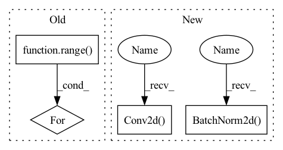

Pattern ID :1707

Before Change
in_channels = 3
out_channels = 64
for _ in range(num_conv_block):
block += [nn.ReflectionPad2d(1),
nn.Conv2d(in_channels, out_channels, 3),
nn.LeakyReLU(),
nn.BatchNorm2d(out_channels)]
After Change
nn.Conv2d(64, 128, kernel_size=3, stride=1, padding=1, bias=False),
nn.BatchNorm2d(128),
nn.LeakyReLU(negative_slope=0.2, inplace=True),
nn.Conv2d(128, 128, kernel_size=4, stride=2, padding=1, bias=False),
nn.BatchNorm2d(128),
nn.LeakyReLU(negative_slope=0.2, inplace=True),
// Conv2
In pattern: SUPERPATTERN
Frequency: 3
Non-data size: 4
Instances
Fragment ID: 4364226
Project Name: lornatang/esrgan-pytorch
Commit Name: 8ef58f0f8458d618a99fffa07433927c9b9ef70f
Time: 2020-10-12
Author: liuchangyu1111@gmail.com
File Name: esrgan_pytorch/model.py
M Class Name: Discriminator
N Class Name: Discriminator
M Method Name: __init__(1)
N Method Name: __init__(2)
M Parent Class: nn.Module
N Parent Class: nn.Module
M File Name: esrgan_pytorch/model.py
N File Name: esrgan_pytorch/model.py
M Start Line: 140
M End Line: 177
N Start Line: 26
N End Line: 74
'>
Before Change
in_channels = 3
out_channels = 64
for _ in range(num_conv_block):
block += [nn.ReflectionPad2d(1),
nn.Conv2d(in_channels, out_channels, 3),
nn.LeakyReLU(),
nn.BatchNorm2d(out_channels)]
After Change
nn.LeakyReLU(negative_slope=0.2, inplace=True),
// Conv2
nn.Conv2d(128, 256, kernel_size=3, stride=1, padding=1, bias=False),
nn.BatchNorm2d(256),
nn.LeakyReLU(negative_slope=0.2, inplace=True),
nn.Conv2d(256, 256, kernel_size=4, stride=2, padding=1, bias=False),
nn.BatchNorm2d(256),
nn.LeakyReLU(negative_slope=0.2, inplace=True),
// Conv3
nn.Conv2d(256, 512, kernel_size=3, stride=1, padding=1, bias=False),
nn.BatchNorm2d(512),
nn.LeakyReLU(negative_slope=0.2, inplace=True),
nn.Conv2d(512, 512, kernel_size=4, stride=2, padding=1, bias=False),
nn.BatchNorm2d(512),
nn.LeakyReLU(negative_slope=0.2, inplace=True),
// Conv4
nn.Conv2d(512, 512, kernel_size=3, stride=1, padding=1, bias=False),
nn.BatchNorm2d(512),
nn.LeakyReLU(negative_slope=0.2, inplace=True),
nn.Conv2d(512, 512, kernel_size=4, stride=2, padding=1, bias=False),
nn.BatchNorm2d(512),
'>
Fragment ID: 4364227
Project Name: lornatang/esrgan-pytorch
Commit Name: 8ef58f0f8458d618a99fffa07433927c9b9ef70f
Time: 2020-10-12
Author: liuchangyu1111@gmail.com
File Name: esrgan_pytorch/model.py
M Class Name: Discriminator
N Class Name: Discriminator
M Method Name: __init__(1)
N Method Name: __init__(2)
M Parent Class: nn.Module
N Parent Class: nn.Module
M File Name: esrgan_pytorch/model.py
N File Name: esrgan_pytorch/model.py
M Start Line: 140
M End Line: 177
N Start Line: 26
N End Line: 74
'>
Before Change
def __init__(self, num_convs, in_channel, out_channel):
super().__init__()
layers = []
for i in range(num_convs):
layers.append(convBlock(out_channel*i + in_channel, out_channel))
self.net = nn.Sequential(*layers)
def forward(self, X):
After Change
class Transition(nn.Module):
def __init__(self, nChannels, nOutChannels):
super(Transition, self).__init__()
self.bn1 = nn.BatchNorm2d(nChannels)
self.conv1 = nn.Conv2d(nChannels, nOutChannels, kernel_size=1,
bias=False)
def forward(self, x):
out = self.conv1(F.relu(self.bn1(x)))
out = F.avg_pool2d(out, 2)
'>
Fragment ID: 4364186
Project Name: mayurji/image-classification-pytorch
Commit Name: 6fcaecfed9a197dd8cf6a73345e5396e57eba654
Time: 2021-07-31
Author: mayur87545@gmail.com
File Name: DenseNet.py
M Class Name: DenseBlock
N Class Name: Transition
M Method Name: __init__(3)
N Method Name: __init__(4)
M Parent Class: nn.Module
N Parent Class: nn.Module
M File Name: DenseNet.py
N File Name: DenseNet.py
M Start Line: 33
M End Line: 38
N Start Line: 57
N End Line: 60
'>
Before Change
self.conv1 = nn.Conv2d(3, 64, kernel_size=9, stride=1, padding=4)
for i in range(self.n_residual_blocks):
self.add_module("residual_block_" + str(i + 1), ResidualBlock())
self.conv2 = nn.Conv2d(64, 64, kernel_size=3, stride=1, padding=1)
self.bn = nn.BatchNorm2d(64)
After Change
upsampling = []
for out_features in range(upsample_block_num):
upsampling += [
nn.Conv2d(64, 256, 3, 1, 1),
nn.BatchNorm2d(256),
nn.PixelShuffle(upscale_factor=2),
nn.PReLU(),
]
'>
Fragment ID: 4364174
Project Name: lornatang/srgan-pytorch
Commit Name: acd467b89c7ccd5ca556b43a505b5745feda6b21
Time: 2020-09-21
Author: liuchangyu1111@gmail.com
File Name: srgan_pytorch/model.py
M Class Name: Generator
N Class Name: Generator
M Method Name: __init__(2)
N Method Name: __init__(3)
M Parent Class: nn.Module
N Parent Class: nn.Module
M File Name: srgan_pytorch/model.py
N File Name: srgan_pytorch/model.py
M Start Line: 78
M End Line: 100
N Start Line: 24
N End Line: 60